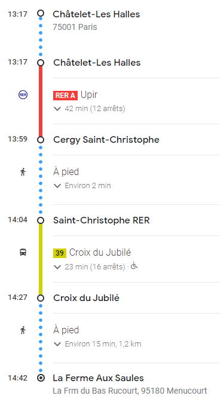

Pour plus d'informations sur le lieu, voici son adresse internet: https://www.fermeauxsaules.com/fr/accueil.
Merci de bien vouloir nous indiquer le moyen de transport que vous utiliserez pour venir:
En transports en commun depuis
Paris: RER A puis bus 39
